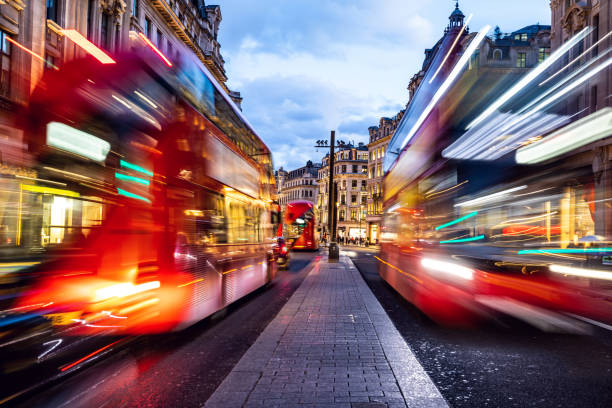
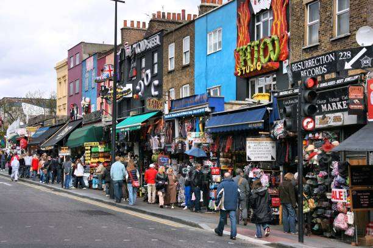

Une ville d'importance mondiale
Considérée comme l'une des villes les plus importantes du monde grâce à son histoire et sa place dans les marchés financiers, elle a aussi une place important dans mon coeur.
J'y ai passé trois ans de mon enfance. Je me suis très vite attaché à cette ville sublime.
Voici un bref aperçu de lieux emblématiques de Londres:
Tower Bridge
Reconnaissable entre mille, le Tower Bridge est le pont à bascule le plus célèbre du monde. Il se trouve à l'est du vieux Londres sur la Tamise, le fleuve qui traverse la Capitale, à deux pas de la Tour de Londres. Cette dernière est un château médiéval dans lequel sont abrités les joyaux de la Couronne, sous la garde des Yeomen Warders. Ils sont également chargés de la surveillance des prisonniers de la Tour.
Le Tower Bridge a été construit fin du 19è siècle car il n'existait pas de pont pour relier les rives des quartiers Est de Londres. L'ensemble est constitué d'un pont routier et d'une passerelle piétonne reliant deux tours de style néogothique par un pont routier et une passerelle pour les piétons. Un système ingénieux permet aux navires de grand gabarit de circuler sous le pont routier qui est à bascule. il s'agit d'une machinerie à vapeur et d'accumulateurs d'énergie permettant d'actionner le mécanisme de levage du pont routier en une minute seulement.
Picadilly Circus
Célèbre place de Londres pour ses enseignes lumineuses, c'est un symbole de l'effervescence de la vie londonienne. L'éventail d'activités proches de cette place en font un point d'intérêt immanquable! Multitude de magasins, cinémas, théâtres, et restaurants... Vous trouverez inévitablement de quoi occuper votre séjour dans le voisinage de ce lieu emblématique.
British Museum
Un de mes lieux préférés avec le Natural History Museum... La richesse de ses collections et la beauté des lieux nous emporte pour un voyage dans l'Histoire de l'Homme: on y découvre à chaque détour un peu plus sur les origines de l'humanité. Situé au cœur de Londres, vous y trouverez plus de 7millions d'objets et de pièces de musée en provenance de partout dans le monde, répartis dans plus de 90 salles.
Camden Town
Si vous aimez déambuler dans des rues à la découverte de curiosités, chiner dans un marché aux puces ou simplement faire du lèche vitrines devant des boutiques de mode, Camden Town est faite pour vous. Il s'agit d'un quartier très apprécié des touristes. De nombreux cafés et pubs s'y trouvent. Le soir venu, la fête bat son plein au Jazz Cafe, à Roundhouse, dans les discothèques alternatives et enseignes plus traditionnelles! C'est un lieu plein de vie et vous pouvez même vous rendre au domaine Regent's Park dans la foulée pour y admirer les jardins à l'anglaise et le zoo de Londres.
Big Ben
La Tour Elisabeth du palais de Westminster (siège du Parlement britannique), est la tour horloge de cet édifice. La grande cloche de 13,5 tonnes à son sommet est le célèbre Big Ben. Impossible de visiter l'intérieur de la tour, à moins d'habiter au Royaume-uni et d'obtenir une autorisation. Pourquoi aller visiter Big Ben alors qu'on voit la tour de l'autre côté de la Tamise et qu'on entend sa cloche à 6km à la ronde? Ne pas passer au pied de ce symbole de Londres est un peu comme aller à Paris sans passer par le Champ de Mars… De plus, le palais de Westminster est à deux pas de Buckingham Palace (résidence des souverains britanniques) et en plein centre-ville ouest, les activités ne manquent pas après la visite!
London City
La City de Londres est un quartier financier historique qui abrite à la fois la Bourse de Londres et la Banque d'Angleterre. Les gratte-ciel modernes des banques se dressent au-dessus des vestiges des ruelles médiévales. Les employés huppés fréquentent les restaurants et bars chics du quartier. Les attractions touristiques incluent l'emblématique cathédrale Saint-Paul, datant du XVIIe siècle, le Museum of London qui retrace l'histoire de la ville et l'immense centre culturel Barbican Centre pour ses spectacles.
Natural History Museum
Le Musée d'Histoire Naturelle de Londres (Natural History Museum) est consacré à la planète Terre et à l'évolution des différentes formes de vie qu'elle a accueilli à travers le temps. Plus de 70 millions de spécimens et d'objets en lien avec la nature y sont exposés. Dès votre arrivée, l'immense hall d'entrée ne pourra pas vous laisser indifférent. Vous y découvrirez une décoration soignée, où des animaux de très grande taille sont exposés - comme par exemple, les squelettes d'un énorme diplodocus et d'un mastodonte originaire du Chili, pour ne citer que quelques-uns de ces impressionnants spécimens.